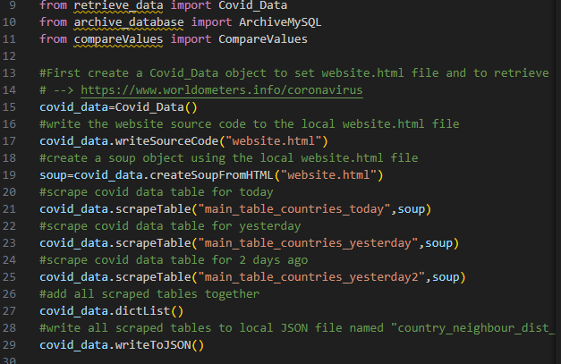

COVID DATA ANALYSIS
2023

ABOUT THE PROJECT
A command-line interface application designed to analyze and compare COVID-19 statistics across different countries. The application scrapes real-time data from worldometers.info and provides comparative analysis using advanced data processing techniques.
Data Scraping
Real-time data collection from worldometers using BeautifulSoup
Data Storage
MySQL database integration for efficient data management
Analysis Tools
Advanced data processing using Pandas library
Comparative Analysis
Cross-country statistical comparison and trending
DEMONSTRATION
TECHNICAL ARCHITECTURE
The application is built using a modular architecture:
- retrieve_data.py: Handles web scraping and JSON data storage
- archive_database.py: Manages MySQL database operations
- compareValues.py: Implements statistical analysis functions
- main.py: Orchestrates application flow and user interaction
- Data storage in JSON format for efficient data transfer
VIEW PROJECT
Explore the complete source code: